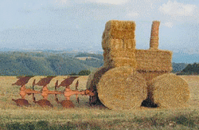

La France est le : - 1er producteur agricole de l’Union européenne.
La France est le : - 2ème importateur mondial de soja et le traitement de ses pollutions agricoles correspondrait à 20% de la facture d’eau des consommateurs.
La France est le : - 3ème plus gros utilisateur de produits phytosanitaires pour son agriculture, après les Pays-Bas et la Belgique.
|  | Activité séculaire et vitale, c’est l’agriculture qui nous fournit la grande majorité de notre alimentation. Elle façonne les 2/3 du paysage français et contribue à l’entretien d’une biodiversité essentielle lorsque ses pratiques sont respectueuses de l’environnement. En revanche, le modèle agricole intensif qui s’est développé depuis une cinquantaine d’années en Europe et dans certaines régions du monde, a conduit à des effets dévastateurs, voir même irréversibles pour certains, sur les écosystèmes et la biodiversité. Basé sur la monoculture et le recours aux pesticides et aux engrais chimiques, ce modèle agricole devenu standard est la cause de nombreux problèmes sanitaires et socioéconomiques. Il existe différents types d'agriculture : |
| Appellation | Définition | Objectifs |
| Agriculture durable | «L’agriculture durable invite à promouvoir et à pratiquer une agriculture économiquement viable, saine pour l’environnement et socialement équitable. L’agriculture durable est une agriculture soutenable car elle répond aux besoins d’aujourd’hui(aliments sains, eau de qualité, emploi et qualité de vie) sans remettre en cause les ressources naturelles pour les générations futures.» RAD et CIVAM | - Promouvoir des systèmes de production autonomes et économes, |
| Agriculture paysanne | «L’agriculture paysanne doit permettre à un maximum de paysans répartis sur tout le territoire de vivre décemment de leur métier en produisant sur une exploitation à taille humaine une alimentation saine et de qualité, sans remettre en cause les ressources naturelles de demain. Elle doit participer avec les citoyens à rendre le milieu rural vivant dans un cadre de vie apprécié par tous.» FADEAR | Respect des sociétés paysannes et de l’emploi agricole et rural réparti sur tout le territoire, sur des exploitations à taille humaine. |
| Agriculture biologique | «Concept global qui s’appuie sur le choix de valeurs comme le respect de la terre et des cycles biologiques, la santé, le respect de l’environnement, le bien-être animal, la vie sociale... C’est un mode de production agricole fondé sur un ensemble de techniques complexes excluant l’utilisation de produits chimiques de synthèse.» | - Respect des écosystèmes naturels, - Respect de la santé humaine et animale, - Recherche d’un développement économique cohérent. |
Pour en savoir plus :
Sur l'agriculture : CIVAM (Centres d’Initiatives pour Valoriser l’Agriculture et le Milieu rural)